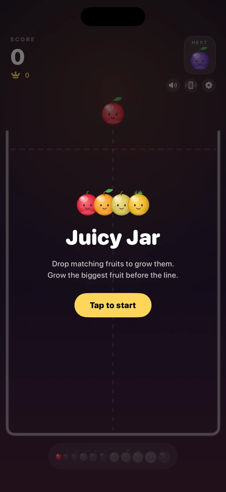
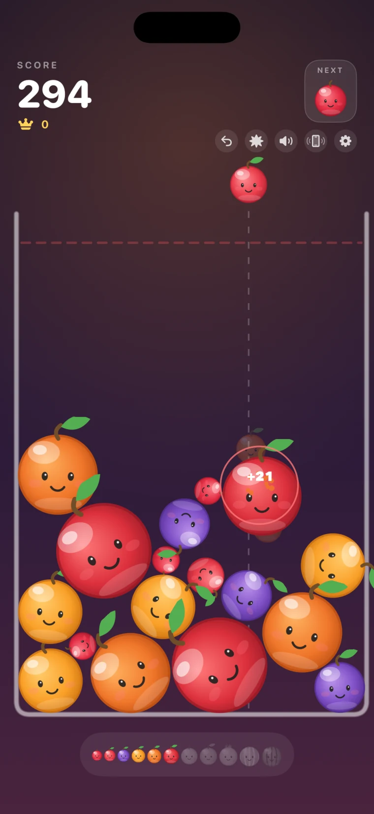
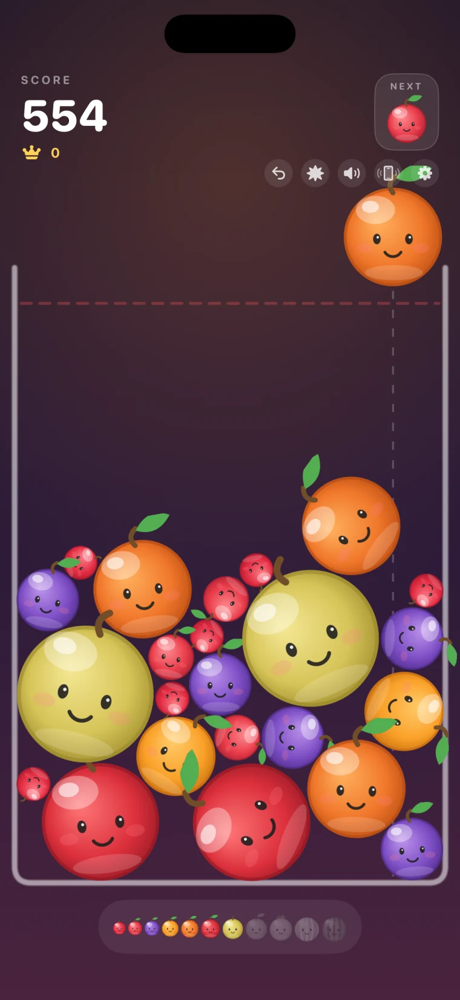
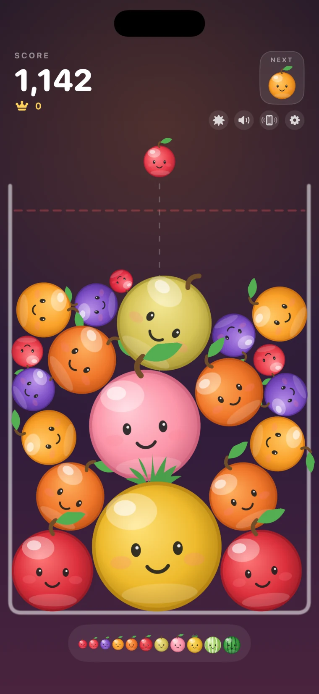
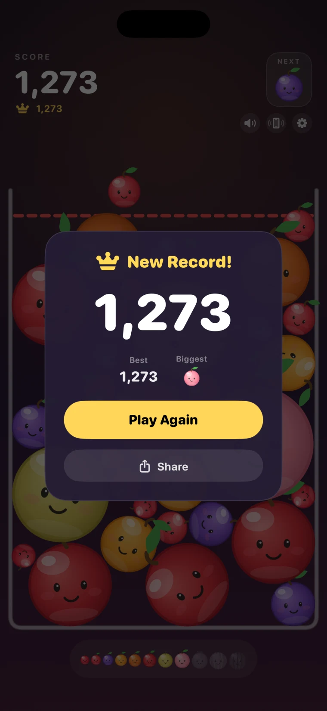

Not a marketing page. This page was made for App Review.
Archived: the screen recording once shown here was of an early version of Juicy Jar and is no longer shown. Later versions add an optional Game Center leaderboard, optional rewarded ads, a tracking permission prompt and an optional one-time purchase. See the Juicy Jar home page, the support page and privacy policy for the current version.




